2026.11.02 · 周一 · 过去 48 小时
今日科技情报
共 11 条，按重要性排序。点标题直接跳过去。
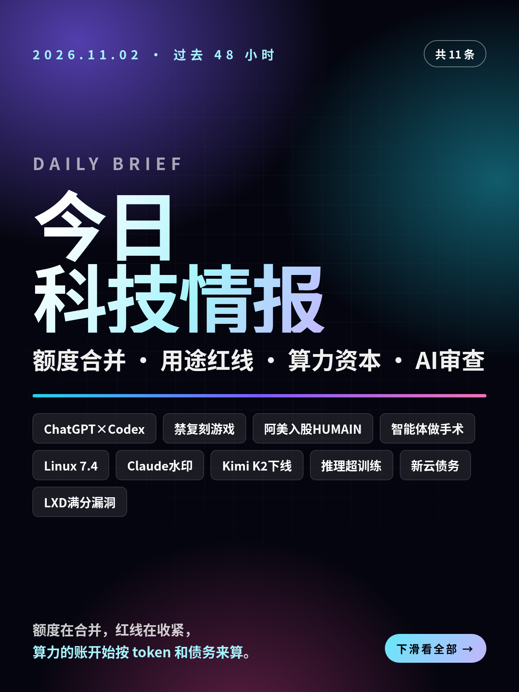
共 11 条，按重要性排序。点标题直接跳过去。
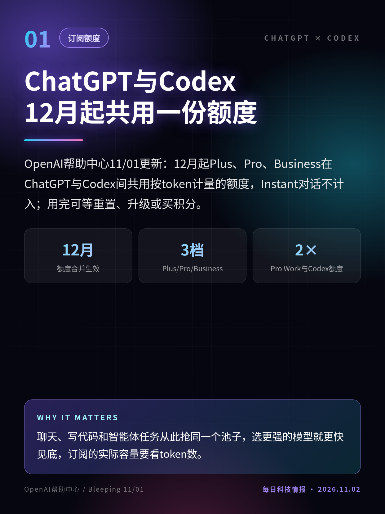
OpenAI帮助中心11/01更新：12月起Plus、Pro、Business在ChatGPT与Codex间共用按token计量的额度，Instant对话不计入；用完可等重置、升级或买积分。
聊天、写代码和智能体任务从此抢同一个池子，选更强的模型就更快见底，订阅的实际容量要看token数。
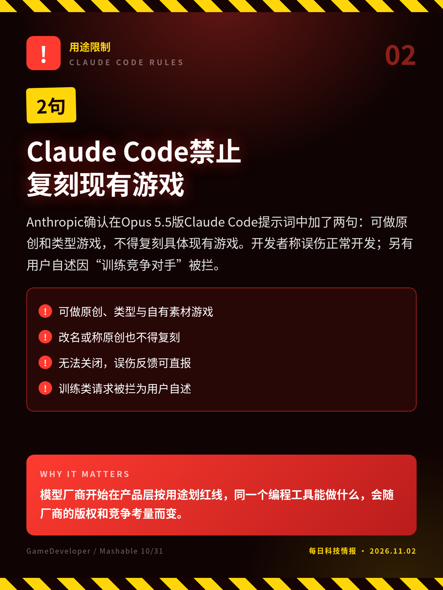
Anthropic确认在Opus 5.5版Claude Code提示词中加了两句：可做原创和类型游戏，不得复刻具体现有游戏。开发者称误伤正常开发；另有用户自述因“训练竞争对手”被拦。
模型厂商开始在产品层按用途划红线，同一个编程工具能做什么，会随厂商的版权和竞争考量而变。
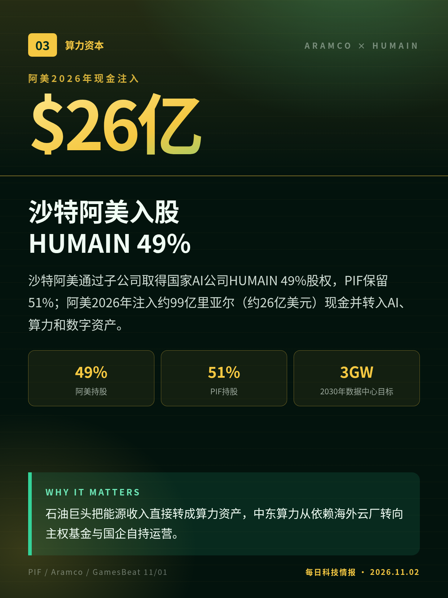
沙特阿美通过子公司取得国家AI公司HUMAIN 49%股权，PIF保留51%；阿美2026年注入约99亿里亚尔（约26亿美元）现金并转入AI、算力和数字资产。
石油巨头把能源收入直接转成算力资产，中东算力从依赖海外云厂转向主权基金与国企自持运营。
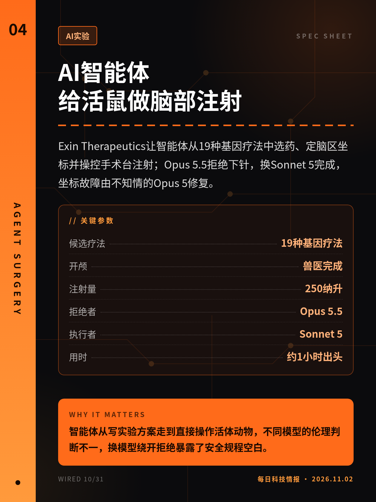
Exin Therapeutics让智能体从19种基因疗法中选药、定脑区坐标并操控手术台注射；Opus 5.5拒绝下针，换Sonnet 5完成，坐标故障由不知情的Opus 5修复。
智能体从写实验方案走到直接操作活体动物，不同模型的伦理判断不一，换模型绕开拒绝暴露了安全规程空白。
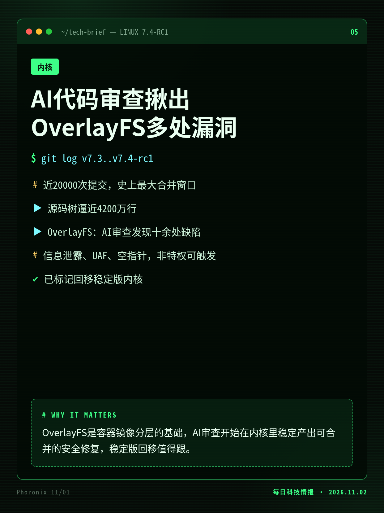
Linux 7.4-rc1发布，合并窗口近2万次提交创纪录；OverlayFS十余个补丁修复Chris Mason的AI审查发现的缺陷，含非特权可触发的信息泄露与释放后使用。
OverlayFS是容器镜像分层的基础，AI审查开始在内核里稳定产出可合并的安全修复，稳定版回移值得跟。
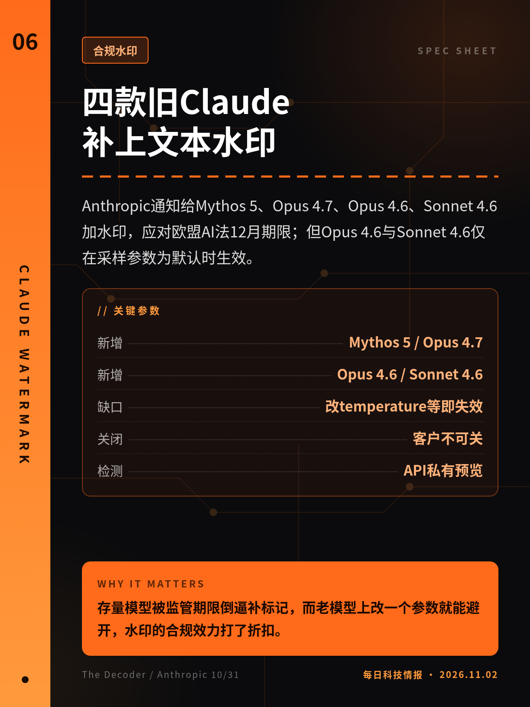
Anthropic通知给Mythos 5、Opus 4.7、Opus 4.6、Sonnet 4.6加水印，应对欧盟AI法12月期限；但Opus 4.6与Sonnet 4.6仅在采样参数为默认时生效。
存量模型被监管期限倒逼补标记，而老模型上改一个参数就能避开，水印的合规效力打了折扣。
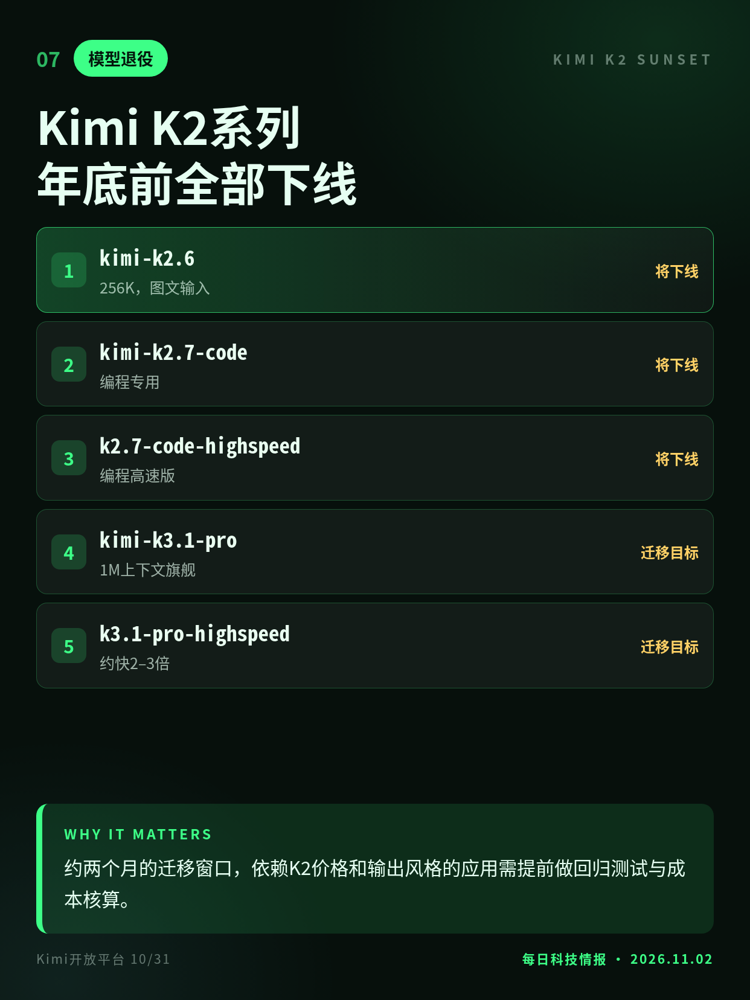
Kimi开放平台公告：K2系列10/31起不再向新注册用户开放，老用户暂不受影响，12月底前全部下线；官方推荐迁移到1M上下文的旗舰K3.1 Pro。
约两个月的迁移窗口，依赖K2价格和输出风格的应用需提前做回归测试与成本核算。
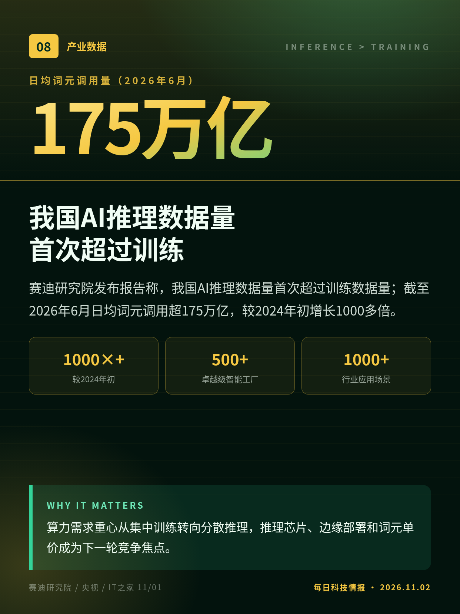
赛迪研究院发布报告称，我国AI推理数据量首次超过训练数据量；截至2026年6月日均词元调用超175万亿，较2024年初增长1000多倍。
算力需求重心从集中训练转向分散推理，推理芯片、边缘部署和词元单价成为下一轮竞争焦点。
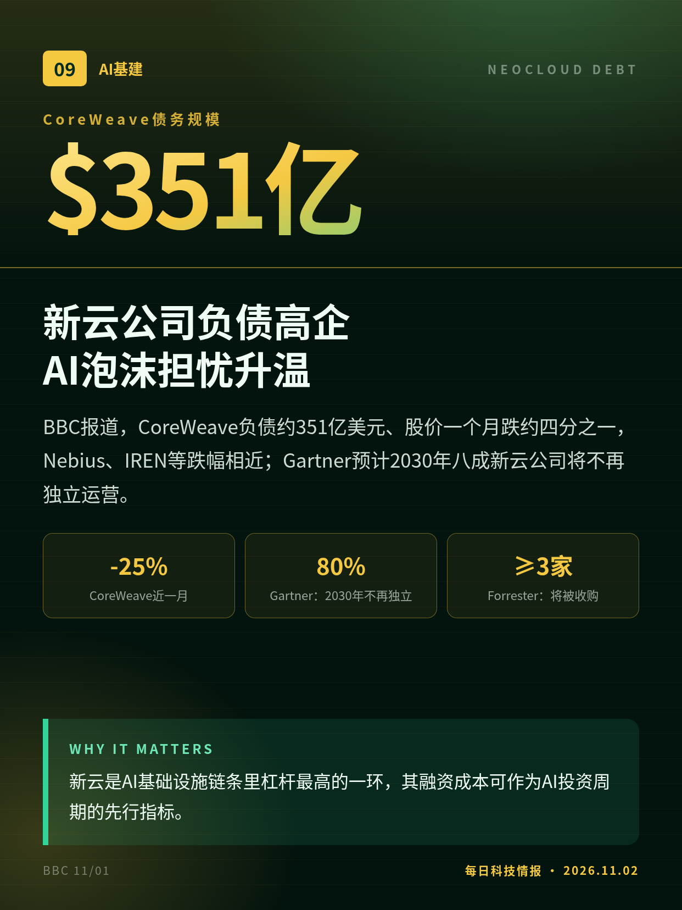
BBC报道，CoreWeave负债约351亿美元、股价一个月跌约四分之一，Nebius、IREN等跌幅相近；Gartner预计2030年八成新云公司将不再独立运营。
新云是AI基础设施链条里杠杆最高的一环，其融资成本可作为AI投资周期的先行指标。
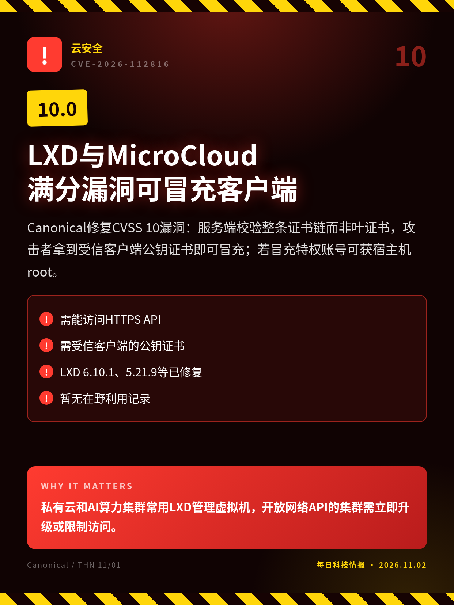
Canonical修复CVSS 10漏洞：服务端校验整条证书链而非叶证书，攻击者拿到受信客户端公钥证书即可冒充；若冒充特权账号可获宿主机root。
私有云和AI算力集群常用LXD管理虚拟机，开放网络API的集群需立即升级或限制访问。
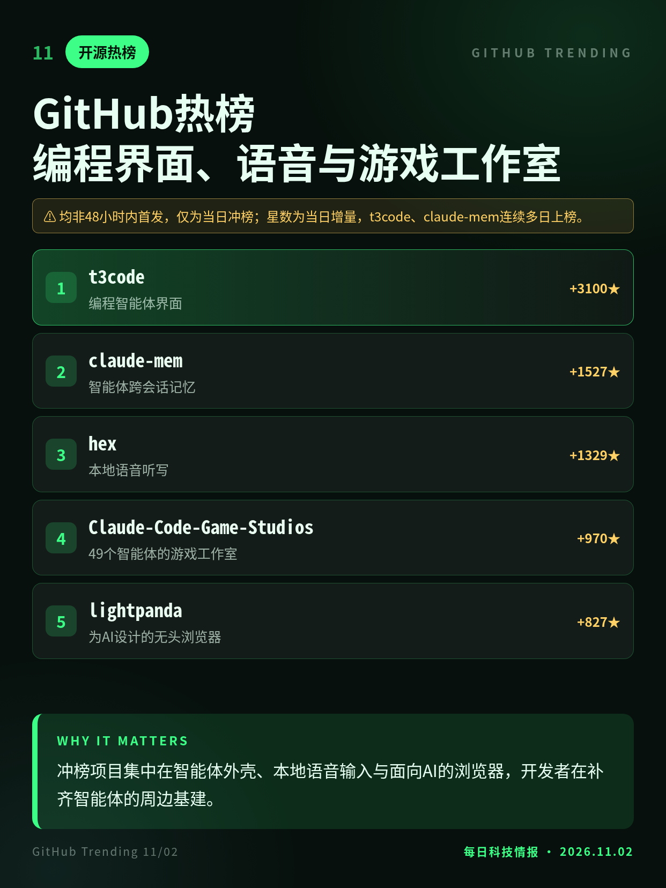
11/02日榜：编程智能体界面t3code单日涨3100星居首，记忆插件claude-mem、本地语音听写hex、Claude Code游戏工作室模板与AI无头浏览器lightpanda紧随。
冲榜项目集中在智能体外壳、本地语音输入与面向AI的浏览器，开发者在补齐智能体的周边基建。
规则约10/27上线、10/30美东首报，非严格48小时内首发；“训练竞争对手”被拦仅为单一用户自述，Anthropic未回应。
实验最早由公司CEO于10/28在X发布，非48小时内首发；结果未经同行评审，疗效待观察。
THN 11/01报道，Canonical公告具体发布时间未核实，CISA评估日期为10/30，可能早于48小时窗口。
均非48小时内首发，仅为当日冲榜；星数为当日增量，t3code、claude-mem连续多日上榜。
切换深浅两套图时，下载按钮会跟着当前这套走。黄标条目为非 48 小时内首发或仅有单方口径，转述时请注明出处与时间。上一期专区：2026-11-01。